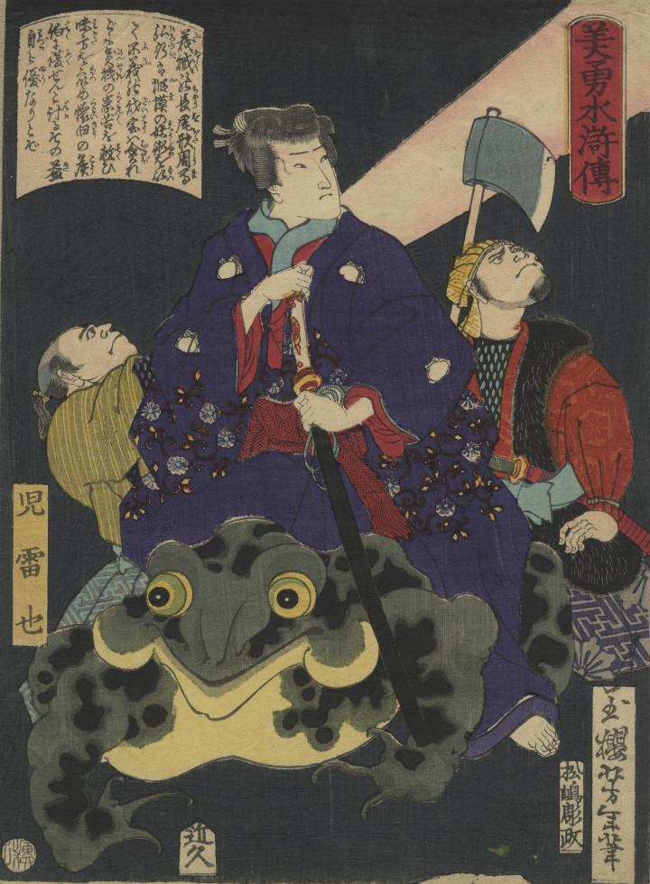

蝦蟇の妖術を使う児雷也が、大蝦蟇の上に乗っている。
著作者：一魁芳年／出典：親書誌：U426_nichibunken_0357：美勇水滸伝 児雷也；ビユウ スイコデン ジライヤ／日付：2014／資源識別子：U426_nichibunken_0357_0001_0000
Copyright (c)2010- International Research Center for Japanese Studies, Kyoto, Japan. All rights reserved.